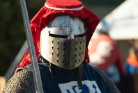
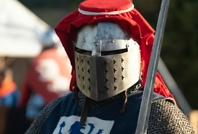

The Kalends of May, 1180
Hire a Stonemason
Gerblog The Honorous Stuns at Annual Banquet
What truths lie beneaquest lest armored visage?
Gerblog The Honorous speakeths greatly!

Trending

Life as a Guard who Only Tells the Truth

Yes, I Kidnapped The Princess
Life as a Guard who Also Only Tells the Truth

 Ferand’s preferred methods of obtaining Glopsmeade
Ferand’s preferred methods of obtaining Glopsmeade
 HARK! Why Peasantry is Quite Honorous Indeed!
HARK! Why Peasantry is Quite Honorous Indeed!
 The Untold Truth Behind My Treacherous Tricks!
The Untold Truth Behind My Treacherous Tricks!